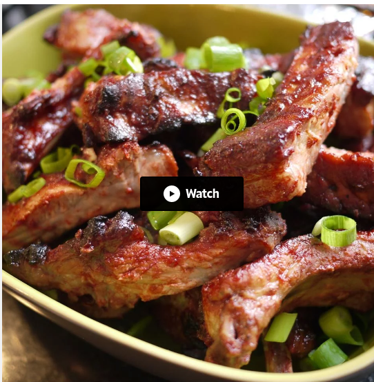

Chinese Sparerib Recipe

Description
After searching the internet for a good Chinese Spareribs recipe and not finding any that caught my eye, I decided to make my own. This recipe is pretty simple, and yields tender, juicy, tangy ribs. In Japan, I cooked this in the fish broiler, but it should be fine on the grill or in the oven.
Ingredients
- 3 tablespoons hoisin sauce
- 1 tablespoon ketchup
- 1 tablespoon soy sauce
- 1 tablespoon sake
- 1 teaspoon rice vinegar
- 1 teaspoon lemon juice
- 1 teaspoon grated fresh ginger
- ½ teaspoon grated fresh garlic
- ¼ teaspoon Chinese five-spice powder
- 1 pound pork spareribs
Instructions
- In a shallow glass dish, mix together the hoisin sauce, ketchup, honey, soy sauce, sake, rice vinegar, lemon juice, ginger, garlic and five-spice powder. Place the ribs in the dish, and turn to coat. Cover and marinate in the refrigerator for 2 hours, or as long as overnight.
- Preheat the oven to 325 degrees F (165 degrees C). Fill a broiler tray with enough water to cover the bottom. Place the grate or rack over the tray. Arrange the ribs on the grate.
- Place the broiler rack in the center of the oven. Cook for 40 minutes, turning and brushing with the marinade every 10 minutes. Let the marinade cook on for the final 10 minutes to make a glaze. Finish under the broiler if desired. Discard any remaining marinade.
Back to Main Recipe Page